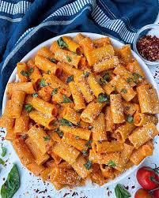

Gigi Hadid's viral pasta recipe is a creamy and spicy vodka sauce pasta that became hugely popular after she shared it on her Instagram story. It's simple, flavorful, and easy to recreate. Here's a breakdown of the recipe:
Ingredients:
Pasta: Any type, such as penne or rigatoni
Olive Oil: For sauteing
Garlic Minced garlic for flavor
Shallots: Finely chopped
Tomato paste: It is the base of the sauce
Heavy Cream: To enhance the creaminess
Red Chilli Flakes: To add spice
Adds richness
Parmesan Cheese: freshly grated for topping
Basil: For garnish
Vodka(Optional): Enhances flavor
Steps:
Cook the Pasta: Boil pasta in salted water according to package instructions. Put aside some pasta water before draining.
Fry aromatics: In a pan, heat olive oil and saute the garlic and shallots until fragrant
Make the sauce: Add tomato paste and cook until darkens slightly. Stir in heavy cream and mix well. (Add vodka(optional) and cook until it evaporates)
Add seasonings and spices: Sprinkle red chilli flakes and and salt as per taste to the sauce. Use the reserved pasta water to adjust the sauce's consistency.
Combine pasta and sauce: Add cooked pasta to the sauce. Use reserved pasta water to adjust the sauce's consistency.
Finish with Butter and Cheese: Stir in butter for extra richness and top with grated Parmesan cheese.
Serve: Garnish with basil (if desired) and enjoy your creamy, spicy pasta!

Reserve Pasta Water: Don't skip this step! The starchy water helps the sauce cling to the pasta and balances the texture.
Control the Spice: Start with a small amount of red chili flakes and taste as you go. You can always add more, but you can't take it out.
Use High-Quality Ingredients: Opt for good tomato paste, Parmesan, and fresh garlic for the best flavor.
Skip Vodka if Needed: It enhances the flavor but isn't essential. You can substitute it with water or more cream.